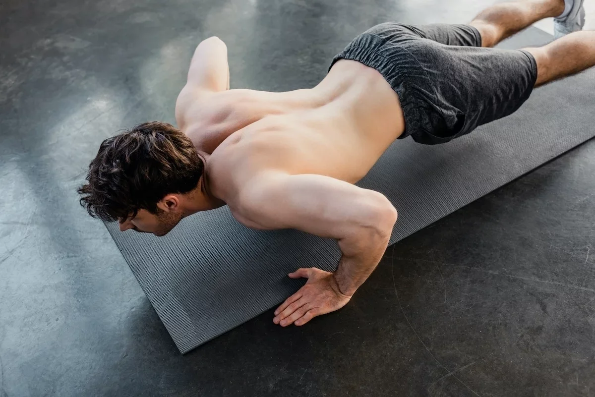

Como Fazer Treino de Peito em Casa
Pegar peso na academia é uma das melhores formas de construir um peito mais forte e volumoso, no entanto, o treino de peito também pode ser feito em casa, mesmo sem peso ou qualquer tipo de equipamento especial.
Quando não se utiliza peso, o segredo para um treino mais eficaz está em aumentar o tempo sob tensão, ou seja, em deixar o músculo contraído por mais tempo, do que o que seria necessário com o uso de pesos. Isso acontece porque, para estimular o crescimento muscular, é preciso deixar o músculo cansado e, embora isso aconteça rápido quando se está utilizando peso, quando o treino é feito em casa sem equipamento a melhor forma de cansar o músculo consiste em fazer mais repetições.
Como fazer o treino em casa
O treino apresentado a seguir inclui 6 variações do exercício de flexão, que é um dos mais completos exercícios para treinar o peito em casa. Os exercícios devem ser feitos em sequência para atingir todas as áreas do peitoral, sendo permitida uma pausa de 30 a 45 segundos entre cada exercício.
Os 6 exercícios constituem uma série de treino, que deve ser repetida entre 3 a 4 vezes, com descanso entre séries de 1 a 2 minutos, para obter melhores resultados. Este treino deve ser feito 1 a 2 vezes por semana.
1. Flexão normal (20x)
Para iniciar o treino de glúteos, um bom exercício é a ponte, pois ajuda a estabilizar o core trabalhando os glúteos, as costas e o abdômen, além de ser uma outra forma de aquecimento muscular.
Como fazer: deve-se colocar as duas mãos no chão à largura dos ombros e depois esticar as pernas até formar uma linha reta desde os ombros até os pés. Por fim, mantendo essa postura deve-se dobrar os braços e descer com o peito em direção ao chão até formar uma ângulo de 90º com os cotovelos, voltando a subir para a posição inicial. Fazer 20 repetições rápidas.
É importante que durante a realização da flexão se mantenha o abdominal contraído, para garantir que as costas fiquem sempre bem alinhadas. Pessoas que tenham maior dificuldade para fazer a flexão podem colocar os joelhos no chão, por exemplo, para aliviar um pouco a carga sobre o músculo.
2. Flexão isométrica (15 seg)
A flexão isométrica é uma variação da flexão normal que permite aumentar o tempo sob tensão do músculo peitoral, o que favorece o crescimento muscular.
Como fazer: deve-se realizar uma flexão normal, mas, após descer o peito até ao chão com os cotovelos num ângulo de 90º, deve-se segurar essa posição por 15 segundos. Durante todo o tempo é também importante manter o abdominal bem contraído, para garantir que se mantém uma linha reta desde os pés até à cabeça.
No caso do exercício ser muito difícil pode-se realizá-lo com os joelhos no chão e em períodos de 5 segundos, por exemplo.
3. Flexão isolada (10x cada lado)
Este tipo de flexões isolar o trabalho muscular em cada lado do peitoral, fazendo com que a tensão sobre o músculo seja maior, favorecendo a hipertrofia.
Como fazer: este exercício é semelhante à flexão normal, no entanto, ao invés de se colocar as duas mãos à largura dos ombros, deve-se colocar uma mão mais afastada do corpo, de forma a que esse braço fique completamente esticado. Depois deve-se realizar o movimento de descer com o peito até ao chão, mas aplicando a força apenas no lado do peito que tem a mão mais próxima do corpo. Este exercício deve ser feito com 10 repetições para cada lado do peitoral.
Caso o exercício sejam muito difícil deve-se realizá-lo com os joelho no chão.
4. Flexão declinada (20x)

As flexões são um exercício bastante completo para treinar o músculo peitoral, no entanto, fazer pequenas variações no ângulo em que são realizadas pode ajudar a focar um pouco mais na região superior ou inferir do peito. Esta versão permite trabalhar mais a região superior do músculo.
Como fazer: este exercício precisa ser feito com o apoio de um banco ou uma cadeira. Para isso deve-se colocar os dois pés em cima da cadeira e depois, mantendo a posição da flexão normal, mas com os pés elevados, deve-se realizar 20 flexões.
Para se tentar diminuir a intensidade do exercício pode-se escolher um apoio para os pés mais baixo, por exemplo, de forma a desviar peso da região do peitoral. Outra opção também consiste em fazer pequenas séries de 5 ou 10 repetições seguidas, até atingir as 20.
5. Flexão inclinada (15x)
Após trabalhar mais a região superior do peitoral, as flexões inclinadas vão ajudar a focar um pouco mais na parte inferior do músculo peitoral.
Como fazer: este exercício também deve ser feito com o apoio de um banco ou cadeira. Neste caso, deve-se colocar as duas mãos em cima do banco e depois deve-se esticar as pernas e manter o corpo reto, em posição de flexão normal. Por fim, é só realizar as flexões, levando o peito em direção ao banco até que os cotovelos fiquem num ângulo de 90º. Fazer 15 repetições seguidas.
Se o exercício for muito difícil pode-se tentar utilizar um apoio mais baixo ou, se possível, realizar as flexões com os joelhos no chão, por exemplo.
6. Flexão explosiva (10x)
Para finalizar a série de treino e garantir a fadiga muscular, a flexão explosiva é um excelente exercício, que ativa todo o músculo peitoral e utiliza toda a força de contração.
Como fazer: a flexão explosiva é muito semelhante à flexão normal, porém, no momento de retornar à posição inicial, depois de se descer com o peito em direção ao chão, deve-se fazer o máximo de força com as mãos contra o chão, para empurrar o corpo para cima e criar um ligeiro salto. Isto garante que o músculo contrai de forma explosiva. Fazer 10 repetições.
Este exercício causa bastante fadiga muscular, por isso, caso se torne muito difícil de realizar deve-se fazer o máximo de flexões explosivas que se conseguir e depois completar o número de flexões que faltar com flexões normais.
Após este exercício deve-se descansar entre 1 a 2 minutos e retornar ao início da série, até completar 3 a 4 voltas.